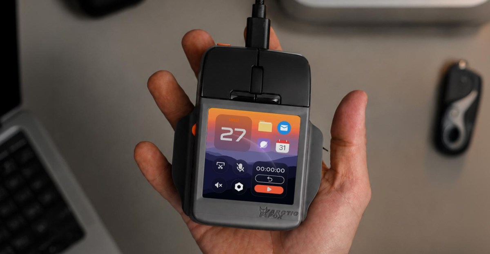

for DC Advanced UX Team.Vivi · Yohan · Libby · Lim Jisu · Katey · Anna
Back Issue

Interaction
Super Mouse: a screen under the palm
Arctic Fox puts a 3.1-inch, 720-by-720 touchscreen under the buttons of the Super Mouse, ahead of a scroll wheel and two hyper keys. A Control Panel holds up to 16 shortcuts and swaps them for the app in front: Premiere gets edit and playback, and Flow lets you draw the rest. A gyroscope scrubs video when the body moves. Voice-to-text stays on the mouse. There is no battery. Power is USB-C, so it never leaves the cable. Backers pay $199; retail is $249, with deliveries aimed at February 2027.
아크틱 폭스는 슈퍼 마우스 버튼 아래에 3.1인치, 720×720 터치스크린을 두고, 앞에 스크롤 휠과 하이퍼 키 두 개를 둔다. 컨트롤 패널은 바로가기 16개까지 담고 앞의 앱에 맞춰 바꾼다. 프리미어에서는 편집과 재생이고, 나머지는 Flow로 그린다. 자이로스코프는 본체를 움직이면 영상을 훑는다. 음성 텍스트는 마우스 안에서 처리한다. 배터리는 없고 USB-C로만 전원을 받는다. 후원 199달러, 정가 249달러, 배송은 2027년 2월을 가리킨다.
Spot Studio in Barcelona sets Felipe Pantone's frames inside his own graphics for Etnia. Director Nicolás Cañellas and animator Ezequiel Leiva build the glasses from flat colour, scan lines and a register that slips. A lens turns into a stripe, then into a field, and the product never gets a clean beauty shot. Optical noise does the job a turntable usually does. The stills are loud; the cut is what you study.
바르셀로나의 스팟 스튜디오가 에트니아를 위해 펠리페 판톤의 프레임을 그의 그래픽 안에 넣는다. 감독 니콜라스 카녜야스와 애니메이터 에세키엘 레이바가 평평한 색, 스캔 라인, 어긋나는 레지스터로 안경을 만든다. 렌즈는 줄이 되었다가 면이 되고, 제품은 깨끗한 뷰티 샷을 얻지 못한다. 광학 노이즈가 턴테이블 몫을 한다. 스틸은 시끄럽고, 볼 것은 컷이다.
Qt's Clate is a free beta for embedded and HMI screens, with QML under the canvas. The assistant, opened from the top bar, takes a prompt through the Agent Client Protocol; Claude is the provider at launch, and a local MCP server lets an outside agent in. Screen flows are a node graph, so the trigger for a jump sits on the line. Hit record, move a control, and the timeline stores the keyframes. Colour, space and type are tokens, defined once. The file you hand over is the interface, not a picture of it.
Qt의 Clate는 임베디드와 HMI 화면을 위한 무료 베타다. 캔버스 아래는 QML이다. 상단의 어시스턴트는 Agent Client Protocol로 프롬프트를 받으며, 시작 공급자는 Claude다. 로컬 MCP 서버로 바깥 에이전트도 붙는다. 화면 흐름은 노드 그래프라 이동의 트리거가 선 위에 있다. 녹화를 누르고 컨트롤을 움직이면 타임라인이 키프레임을 저장한다. 색, 간격, 글자는 한 번 정하는 토큰이다. 넘기는 파일은 그림이 아니라 인터페이스다.
César Cid, creative lead at Madrid studio CESS, built The Artphabet as 26 letters in 3D, one artist each, after 36 Days of Type. A is a Campbell's soup can for Warhol. D is Damien Hirst's shark in its tank. B takes Banksy's girl and balloon, V the swirl of Starry Night. The initials run out: Munch's scream is bent into Z, because S was already taken. The letter is the sculpture. It is not a texture wrapped around a font.
马德里CESS创意负责人César Cid做了The Artphabet：26个三维字母，一位艺术家一个，起点是36 Days of Type。A是沃霍尔的金宝汤罐头。D是Damien Hirst罐子里的鲨鱼。B取Banksy的女孩和气球，V取星夜的旋涡。首字母不够用，蒙克的呐喊被折成Z，因为S已经有主。字母就是雕塑，不是套在字体上的贴图。
마드리드 CESS의 크리에이티브 리드 세사르 시드가 The Artphabet을 만들었다. 36 Days of Type 뒤로 작가 한 명에 글자 하나, 3D 스물여섯 자다. A는 워홀의 캠벨 수프 캔이다. D는 데미언 허스트의 수조 속 상어다. B는 뱅크시의 소녀와 풍선, V는 별이 빛나는 밤의 소용돌이다. 이니셜이 모자라 뭉크의 절규는 Z로 꺾인다. S는 이미 있었기 때문이다. 글자는 조각이지, 서체에 감은 텍스처가 아니다.
DutchScot's identity for Bar Rêve, a Brooklyn cocktail bar, treats the wordmark as something that stretches, floats and evaporates, on paper and on screen. Designer Eoin O'Kramer turns the address 222 into Zzz. A lamb, a swan and a bull, drawn in the studio, show up as small asides, the animals that keep returning in dreams. The colour sits with Joan Miró. On the site you float upward instead of scrolling down. The script stays European. The behaviour does not.
더치스콧이 브루클린 칵테일 바 Bar Rêve를 위해 만든 아이덴티티는 워드마크를 늘어나고 떠오르고 증발하는 것으로 다룬다. 종이 위에서도 화면에서도 그렇다. 디자이너 오인 오크레이머는 주소 222를 Zzz로 바꾼다. 스튜디오에서 그린 양, 백조, 황소는 꿈에 반복되는 동물로, 작게 끼어든다. 색은 호안 미로 쪽에 둔다. 사이트에서는 아래로 스크롤하지 않고 위로 떠오른다. 서체는 유럽식으로 남고, 움직임은 그렇지 않다.
A Twilight Sparkle making the rounds is not a model. It is a billboard sprite, the trick from DOOM and Daggerfall: several flat drawings, front, side and back, swapped on a quad that always faces the camera. The view angle picks the nearest frame, so a turn reads as volume. Another test does the same with a Sonic head. In Blender, BeyondDev's CamKeys gets there with Forced Perspective and Stepped Turn Around, a switch it plans to rename Billboard Emulation.
트와일라잇 스파클은 모델이 아니다. 둠과 대거폴의 빌보드 스프라이트다. 정면, 측면, 후면의 평면 그림 여러 장을, 항상 카메라를 보는 쿼드 위에서 바꾼다. 시야각이 가장 가까운 프레임을 고르므로 회전이 부피로 읽힌다. 다른 테스트는 소닉의 머리로 같은 일을 한다. 블렌더에서 비욘드데브의 CamKeys는 Forced Perspective와 Stepped Turn Around로 이르고, 그 스위치는 Billboard Emulation으로 이름을 바꿀 예정이다.
Editing a generative plugin or a shader in Figma now writes a new version instead of painting over the last one. Each version gets a short description from the agent, so the changelog is a list of what changed, and the file shows which version is the one published. You can restore an earlier pass. It is rolling out this week, on the same AI Design tools that build the shader. The history is the part a UI team keeps: the effect, and the one before it.
피그마에서 생성형 플러그인이나 셰이더를 고치면 이제 마지막 판을 덮어쓰지 않고 새 버전을 쓴다. 버전마다 에이전트가 짧은 설명을 달아, 변경 기록은 무엇이 바뀌었는지의 목록이 되고, 파일은 지금 공개된 버전이 무엇인지 보여 준다. 이전 패스로 되돌릴 수 있다. 이번 주부터 셰이더를 만드는 같은 AI Design 도구에 깔린다. UI 팀이 남기는 것은 히스토리다. 이 효과와, 그 앞의 효과.
Uncommon's identity for White & Case drops the navy. Catalyst Blue sits with Marble White and Ink Black, and the secondary names are Ion, Thermal, Solar and Ultraviolet. The wordmark is cut like an inscription on Trajan's Column: diagonals slice the W so the letters lean. The ampersand is a monogram on its own. Headline serifs are kinetic. Energy Studio pulls a photograph into streaks, a skyline or a turbine field turning into lines. A film, The Power of Complexity, carries the same cuts.
Uncommon给White & Case的识别去掉了海军蓝。Catalyst Blue配Marble White和Ink Black，辅色是Ion、Thermal、Solar、Ultraviolet。字标像图拉真柱铭文：斜切穿过W，字母前倾。&单独做成字母标志。标题衬线是动态的。Energy Studio把照片拉成条纹，天际线或风机田变成线。片子叫The Power of Complexity。
언커먼이 화이트 앤 케이스를 위해 남색을 뺐다. Catalyst Blue는 Marble White, Ink Black과 있고, 보조색은 Ion, Thermal, Solar, Ultraviolet이다. 워드마크는 트라야누스 원기둥의 명문처럼 잘린다. 대각선이 W를 가르고 글자는 기운다. 앰퍼샌드는 단독 모노그램이다. 헤드라인 세리프는 키네틱하다. Energy Studio는 사진을 줄무늬로 당겨 선으로 만든다. 필름은 The Power of Complexity다.
October's type haul is a pile, and three of them are tools. Viktor Nübel's Twista Sans is uniwidth: the glyphs stay proportional, but every weight shares a width, so a hover can change weight without the line reflowing. Max Phillips's Thalo, drawn at Signal Type for a transport agency, separates b, d, p and q, and keeps I, l, 1 and i from collapsing into one stroke. Latinotype's Brinell is a slab named for the 1900 hardness test, with some serifs simply taken off.
10월의 새 글자는 더미이고, 그중 셋은 도구다. 빅토르 뉘벨의 Twista Sans는 유니위드다. 글자는 비례를 유지하지만 모든 굵기가 같은 너비라, 호버로 굵기를 바꿔도 줄이 다시 흐르지 않는다. 맥스 필립스가 시그널 타입에서 교통 기관을 위해 그린 Thalo는 b, d, p, q를 구분하고 I, l, 1, i가 한 획으로 무너지지 않게 한다. 라티노타입의 Brinell은 1900년 경도 시험에서 이름을 딴 슬래브이고, 일부 세리프는 그냥 빼 버렸다.
DOBEDO's EHHO!² is a micro-barn two people carry, built from a demolished barn in Gunma: corrugated iron for the roof, timber, rope. Hinged sides drop into benches. Open, the inside is crimson, the colour of higanbana. The latches are twigs. Lose one and a fallen stick from the street fits the same hole. Closed, it is a small box in the road. The film shows the carry, then the unfold. A pavilion that is also a seat.
도베도의 EHHO!²는 두 사람이 들고 가는 작은 헛간이다. 군마의 철거된 헛간에서 온 골함석 지붕, 목재, 밧줄로 만들었다. 경첩 옆판은 내려 벤치가 된다. 열면 안쪽은 피안화의 진홍이다. 걸쇠는 나뭇가지다. 하나 잃으면 길의 떨어진 가지가 같은 구멍에 맞는다. 닫으면 길 위의 작은 상자다. 영상은 운반 다음 펼침을 보여 준다. 파빌리온이자 자리다.
TruLife Optics' Andrey Volkov, at the SID Vehicle Displays symposium, splits a holographic HUD so the rainbow stays out of the eyebox. Vertical optical power, the part that throws sunlight into coloured bands, moves into a cylindrical lens in the picture-generating unit. The windshield keeps a horizontal grating, flat enough that outside light does not diffract into the driver's eyes. The lab demonstrator covers a 20-degree field of view. The hologram does less, and the image can still sit out at a distance.
트루라이프 옵틱스의 안드레이 볼코프가 SID 차량 디스플레이 심포지엄에서 홀로그래픽 HUD를 쪼개, 무지개가 아이박스 밖에 있게 한다. 햇빛을 색띠로 던지는 수직 광학 파워는 영상 생성 장치의 원통 렌즈로 옮긴다. 앞유리는 수평 격자를 유지하고, 충분히 평평해서 바깥 빛이 운전자 눈으로 회절하지 않는다. 실험실 시연기는 시야 20도다. 홀로그램은 덜 하고, 상은 여전히 멀리 맺힐 수 있다.
AUO's note on the Peugeot RCZ Vision names the glass. A 12.4-inch transparent Micro LED is used twice: once above the Hypersquare as the driver display, and again as the floating centre screen. Transparency is what they set against a conventional HUD, which runs out of brightness, and against a cluster that has to be a solid slab. The cabin stays open to the road behind the graphic. The diagonal is the new number. The car is the one from Paris.
AUO가 푸조 RCZ 비전에 대해 적은 글이 유리의 치수를 말한다. 12.4인치 투명 마이크로 LED가 두 번 쓰인다. 한 번은 하이퍼스퀘어 위의 운전자 디스플레이이고, 한 번은 떠 있는 중앙 화면이다. 투명함은 밝기가 부족한 일반 HUD에, 그리고 통짜 판이어야 하는 클러스터에 대비된다. 그래픽 뒤로 캐빈은 도로를 향해 열려 있다. 새로운 숫자는 대각선이다. 차는 파리의 그 차다.
Adobe Firefly's video editor can now record inside the timeline. Record video captures the screen and a webcam together, with the microphone on or off, and the clip lands in the edit rather than in a side folder. A walkthrough of an interface and the person talking over it share one sequence, so the picture of the UI and the explanation are the same object. The October note is short. The useful part is that the recording is already a cut, not a file you still have to place.
어도비 파이어플라이의 영상 편집기가 이제 타임라인 안에서 녹화한다. Record video는 화면과 웹캠을 함께 받고, 마이크는 켜거나 끌 수 있으며, 클립은 옆 폴더가 아니라 편집 안에 떨어진다. 인터페이스를 따라가는 화면과 그 위를 말하는 사람이 한 시퀀스를 나눠, UI의 그림과 설명이 같은 오브젝트가 된다. 10월 노트는 짧다. 쓸모 있는 부분은 녹화가 이미 컷이라는 점이다. 아직 놓아야 하는 파일이 아니다.
Ultraviolette's X-47 Venom puts a 7-inch touchscreen on the bars, Qualcomm inside, Android as the OS, sealed to IP67. A 35-watt USB-C port sits with it. Onboard navigation lives on that panel, and a dashcam module, front and rear, plays back through the same glass: 1080p at 30 frames, a Sony IMX307, 120 degrees. The radar's blind zone is drawn on the interface and changes shape, wider on a highway, narrower in town. The dash is where the warning lands.
울트라비올레트의 X-47 베넘은 바에 7인치 터치스크린을 둔다. 안은 퀄컴, OS는 안드로이드, 방수는 IP67이다. 35와트 USB-C가 옆에 있다. 온보드 내비게이션이 그 패널에 있고, 앞뒤 블랙박스도 같은 유리로 재생된다. 1080p, 30프레임, 소니 IMX307, 120도다. 레이더의 사각지대는 인터페이스에 그려지고 형태가 바뀐다. 고속에서는 넓고, 도심에서는 좁다. 경고가 도착하는 곳이 그 대시다.
Lenovo's Xiaoxin 10.1 Color Ink is an LCD that can pretend to be paper. The 10.1-inch panel is 2136 by 1280, 120 hertz, about 500 nits, with an anti-glare coat. Original Color keeps animation and drawing. Color Paper mutes illustrated pages. Ink Paper drops the colour for text. It is not e-ink, so video still moves. Sales in China start on 30 October. The mode is the product: the same pixels, three temperatures of colour.
레노버 샤오신 10.1 컬러 잉크는 종이인 척할 수 있는 LCD다. 10.1인치 패널은 2136×1280, 120헤르츠, 약 500니트이고 눈부심 방지 코팅이 있다. 원색은 애니메이션과 그림을 남긴다. 컬러 페이퍼는 그림책을 낮춘다. 잉크 페이퍼는 본문에서 색을 뺀다. 전자잉크가 아니라 영상은 그대로 움직인다. 중국 판매는 10월 30일에 시작한다. 모드가 제품이다. 같은 픽셀, 색의 온도 세 가지.
Dysturb's Source.s is a drink that does not exist, in pale blue cans with navy type, handed out in Paris and New York. The nutrition panel is an information panel: 0% fake news, 100% critical thinking. One line on the poster reads that excessive fake news is hazardous to democracy. Paris uses yellow type and a mural on the Quai de Valmy. New York borrows wellness advertising, sky and a model. The pictures are credited as AI. The can is doing the usual job of looking finished, which is the trick.
디스터브의 Source.s는 존재하지 않는 음료다. 옅은 파랑 캔에 남색 글자이고, 파리와 뉴욕에서 건넨다. 영양 표는 정보 표다. 가짜 뉴스 0%, 비판적 사고 100%. 포스터의 한 줄은 과도한 가짜 뉴스가 민주에 해롭다고 적는다. 파리는 노란 글자와 케 드 발미의 벽화를 쓴다. 뉴욕은 웰니스 광고, 하늘, 모델을 빌린다. 그림은 AI로 표기된다. 캔은 늘 하던 일, 완성된 것처럼 보이는 일을 한다. 그 일이 수법이다.